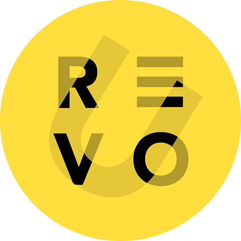
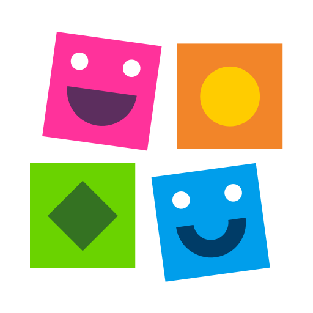
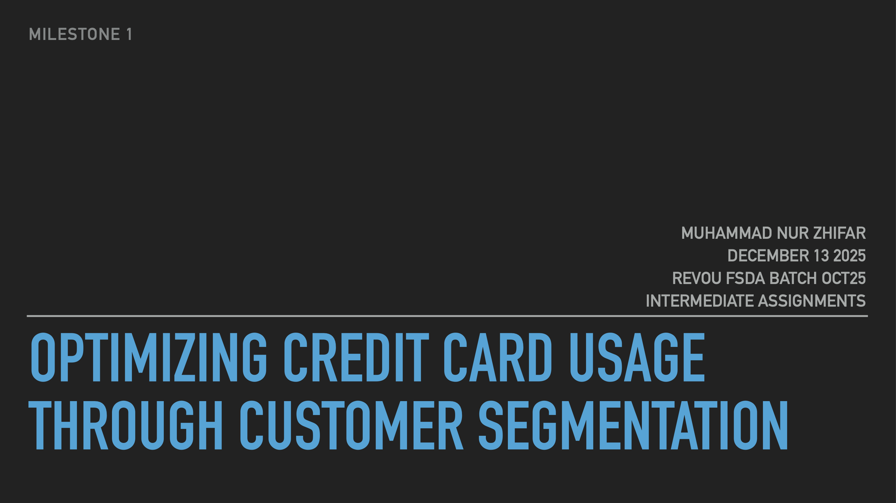

About Me
I am a Communication Science graduate with experience analyzing human behavior and translating it into structured data. I am used to observing patterns, identifying relationships, and organizing information into data that can support marketing and business needs.
I have a strong interest in behavioral patterns and predictive thinking, which helps me approach data not only as numbers but as insights into real-world behavior. This perspective supports my ability to explore patterns, detect anomalies, and understand potential future trends.
I am currently building my career as a Junior Data Analyst with a strong focus on data cleaning and data preparation. I genuinely enjoy working with messy datasets and transforming them into clean, structured, and analysis-ready data using Excel and Python (Pandas). I am committed to contributing to business needs through practical analysis and reliable data preparation.
Education & Training
Bachelor’s Degree — Communication Science

Full Stack Data Analytics
Working Experience
Managed small-scale production workflow and operational tasks with a focus on consistency and quality control.

Designed and built custom motorcycles based on client requirements, handling the process from concept to execution.
Course Experience & Certifications

Completed Frontrunner 7 (B1.2.1) & Frontrunner 8 (B1.2.2)
Course Certificate
Project Experiences
Background: Internet service businesses need to understand churn behavior to protect retention and recurring revenue.
Methodology: Data cleaning, exploratory data analysis, customer behavior analysis, and dashboard-based visualization.
Solution: Cleaned the churn dataset (72K rows, 11 columns), handled missing values, and analyzed behavior patterns to identify churn risk.
Metrics: Churn rate, customer behavior patterns, churn-related variables, and dashboard insights.
Result: Produced a structured churn analysis that supports data-driven retention decisions and highlights customer risk patterns.

Background: Customer segmentation helps businesses understand different customer groups and support targeted decision-making.
Methodology: Data cleaning, filtering, merging datasets, and segmentation-ready data preparation.
Solution: Cleaned and filtered datasets (5,599 → 1,059 records), handled 13K+ missing values, and merged datasets into 1,025 clean records.
Metrics: Record quality, missing values, filtered records, and merged dataset readiness.
Result: Built a clean and structured dataset that enables customer segmentation and more targeted business insights.

Background: Large-scale grocery transaction data can be used to identify revenue drivers and purchasing behavior across categories.
Methodology: SQL querying, aggregation, category-level analysis, and business-oriented performance review.
Solution: Queried and analyzed a large dataset (851K transactions, 98K customers) and aggregated results across 11 categories.
Metrics: Transaction volume, customer count, category-level sales contribution, and purchasing patterns.
Result: Identified revenue drivers and customer purchasing behavior patterns to support sales performance evaluation.
Background: Campaign evaluation is important to understand marketing performance and improve decision-making.
Methodology: Spreadsheet cleaning, data consistency checks, pivot table analysis, and campaign performance evaluation.
Solution: Cleaned the dataset by removing 99% empty columns, fixing inconsistencies, and evaluating campaign performance through Excel.
Metrics: Data reliability, campaign-related analysis points, and pivot-based performance review.
Result: Produced a cleaner and more reliable dataset that supports marketing analysis and campaign decision-making.
Skills
Tools: Excel, Python, SQL, Tableau, Keynote